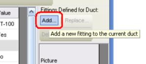
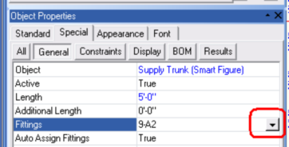
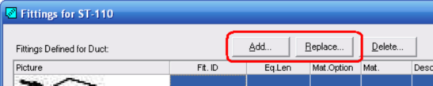
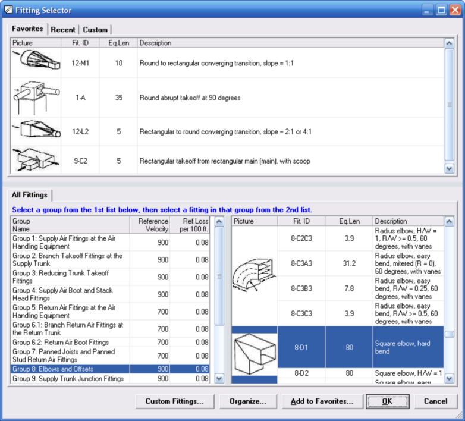

Fitting Selector Dialog (Tabular Manual D Ductsize, Graphic Manual D Ductsize) |
  
|
Fitting Selector Dialog (Tabular Manual D Ductsize, Graphic Manual D Ductsize) |
|
For non-Drawing Board projects you can open the Fitting Selector dialog by clicking the button beside the Fit.ID input on the Tabular Manual D Ductsize window, as shown below.

For Drawing Board projects you can open the Fitting Selector dialog by clicking the button beside the Fittings property for a Manual D Ductsize duct, then clicking the Add button or Replace button on the Fittings dialog, as shown in the two pictures below.


The Fitting Selector dialog lets you quickly choose the appropriate fitting. You simply find the fitting you want in either the top or the bottom lists, then double click it or click OK.

Favorites, Recent and Custom tabs: Clicking one of these tabs lets you select your fitting more quickly than using the All Fittings lists at the bottom. You can add to the Favorites list by selecting a fitting in the bottom lists and clicking the Add to Favorites button at the bottom of this dialog. Each time you select any fitting by clicking OK or double clicking a fitting it adds it to your Recent list. To add to the Custom list, click the Custom Fittings button at the bottom of this dialog.
All Fittings tab: Lists all of the standard Manual D fittings as well as any custom fittings you may have added. To select a fitting, first click the Group list on the left to select a group, then select a fitting in that group on the right.
Custom Fittings button: Opens the Custom Fittings dialog, which lets you manage your list of custom fittings.
Organize button: Opens a popup menu with Favorites, Recent and Custom options, which you can then click to open the Organize dialog that will let you change the order of each list, or delete any fitting from the Favorites or Recent lists.
Add to Favorites button: Adds the currently selected fitting in the bottom right list to your Favorites list at the top of this dialog.
OK button: Copies the ID of the currently selected fitting back to the previous window.
Cancel button: Closes this dialog without copying the currently selected fitting back to the previous window.